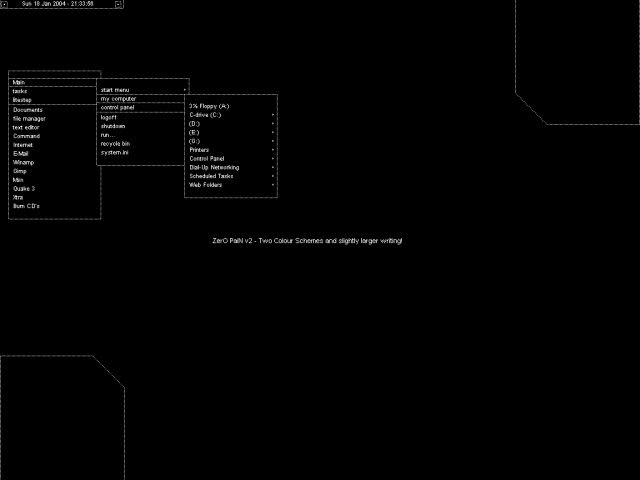

#248299 145 2006-10-31T12:51:56Z Donfuy Hey guys!
Im new at forum and Im from Portugal so dont blame me if i cant speak english very very well!

This news are great! new levels, non-only-horizontal drones... and no bugs (we will hope!)
#248300 7 2006-10-31T13:16:13Z Donfuy i have that game for PC but I dont know if my web is suficiently fast to game with you... but ill try...

#291711 49 2007-01-30T13:06:23Z Donfuy yay!
this would be one of the greatest news of the year!!!

I didn't have reasons to buy a Xbox360 instead of the PS3 but now... oh god!!!
#307236 24 2007-03-23T18:44:33Z Donfuy Go Metanet Go!:D
#315207 403 2007-04-23T13:42:29Z Donfuy 1- No bugs (duh...)
2- Faster loading? is that possible?
3- Not remembering nothing now.
#322484 33 2007-05-19T15:21:23Z Donfuy omg... I hate the waiting
#322489 36 2007-05-19T15:37:18Z Donfuy I had Windows 98 on my old computer (now I'm with XP) and I think it was the better OS ever.
#324918 19 2007-05-28T09:22:17Z Donfuy y-a-y!!!!
omg... NOW I need a PSP!!
#333006 612 2007-06-19T13:28:13Z Donfuy Just to say I'm Donfuy. I'm an huge fan of N. No, I don't post regularly, but I visit the forum almost everyday.
#333048 10 2007-06-19T16:16:01Z Donfuy I like the subtle color differences. Got to keep it classy.
I'm with you epigone
#333050 25 2007-06-19T16:17:09Z Donfuy Dumbo.
#334191 39 2007-06-21T23:21:17Z Donfuy
EDIT: The font sucks. Nothing else does (now): just the font.

the new font rocks!
#335560 13 2007-06-25T08:34:41Z Donfuy you're suggesting a whole new program, with so many buttons!
no guys, it's just too complicated...
#335561 26 2007-06-25T08:41:00Z Donfuy And Fiona?
#335575 38 2007-06-25T10:10:44Z Donfuy HELL NO!!! one eye? I'll be like Captain Redbeard in Lego Racers! (what have I remembered...)
#337287 33 2007-06-30T17:46:01Z Donfuy Super Mario saying: (I) Am F*****
#337289 52 2007-06-30T17:52:33Z Donfuy 2nd option
#16020 1 2007-07-03T19:12:57Z Donfuy mmm... if you don't understand what am I asking... just ask and I'll try to response.

EDIT: is this in the wrong forum?
just saw that...
SUPER EDIT: how do we delete topics?

#338457 2576 2007-07-03T19:30:55Z Donfuy #339454 6 2007-07-06T14:56:21Z Donfuy Option 2. We have enough special characters in names already.
the special character in donfuy "", is only to show were the word is accentuated... I will leave the caracters as they are.
#339587 9 2007-07-06T22:36:35Z Donfuy in the portuguese way... oh nevermind... i'll just leave the pronounciation as it is meant to be. The way people speaking english say Donfuy.
#339588 31 2007-07-06T22:39:38Z Donfuy I Don't Whatever Happens", by dEUS
#339621 3 2007-07-07T00:26:36Z Donfuy I dunno why do you want to quit... don't you like to be here? stay!
#339634 8 2007-07-07T00:45:56Z Donfuy we all get sniped...see me... I got tired of making maps, so I began a career of map tester! well, not really a map tester, I very little map tester we might say
#339648 16 2007-07-07T01:08:43Z Donfuy Pack your stuff and let's get out of here!
#340077 20 2007-07-07T20:47:27Z Donfuy I like it.
#340474 63 2007-07-08T18:19:13Z Donfuy just... BadToys 3D... really sucks... REALLY... OMFG! IT F******* S****!!!!!!!!!!
#16126 1 2007-07-08T20:21:40Z Donfuy Am I the only person that plays Wreckin Crew? Some say it sucks... some say it rocks! It was my first "racing" game... I just think it's fantastic! Ok, the graphics are bad bad bad, but the game overall is awesome!!!
EDIT: oh... I played 3 YEARS only this and Arsenal: Taste the Power.

#341305 22 2007-07-10T10:22:42Z Donfuy Am not.
#341327 8 2007-07-10T11:26:40Z Donfuy Wrecking Crew is a classic game for the NES. It is one of those somewhat obscure games that features mario as an "everyman" character.
I had this game when I was a kid.
Have you finished that list I asked for Django?
no no ... Wreckin Crew... cars game...
sorry guys for the link... I haven't been here yesterday... (correct me if I typed wrongly...)
#16154 1 2007-07-10T11:33:36Z Donfuy So... my mom finally lets me buy a console! Why? Because you have to move on the Wii!
ok...so... games that I MUST have... can you guys give me suggestions?
I know this ones: Zelda: The Twilight Princess
Wario Smooth Moves
Wii Sports (duh)
Far Cry: Vengeance
#341341 308 2007-07-10T13:15:35Z Donfuy Michael
#342275 13 2007-07-12T22:24:02Z Donfuy for those who have Zelda: The Twilight Princess.
The idea that I have from that game is that we control the sword or something in one hand, and in the other hand we have the "Nukchuk" (it reminds some kind of god...), and with it we control Link's body... is that true?
Another thing: I love car simulators, like GTR2. So, the Wii car games are good or just a remake from the PS-X and XBOX to Wii?
Probably, I'll first buy Zelda, Wario Smooth Moves and Super Smash Brothers: Brawl (fan of SSB for N64
)
Thanks for the replies.
#342276 14 2007-07-12T22:33:53Z Donfuy I can tell you that you will not regret buying a Wii. I have played PS3 (in the store) and Xbox360 and I am very glad that I went for the Wii.
Everybody who said that the motion control was a cheap gimmick was quite wrong.
My advice to you about games is this: Don't buy any cross-platform games. Games that are ported to the Wii are just the same game with the motion control features just "tacked on" to make it kind of like Wii.
I have DragonBall Tenkaichi 2 - it is a really fun game, but it hardly utilizes the controllers; it would be just the same as if I had it on PS2.
I have also played Marvel Ultimate Alliance, another port, and it is the same. The Wii controls are just tacked on after the game is finished, and they are entirely optional anyway.
Twilight Princess is an excellent game - get it - but it does not really utilize the controllers much either. Another cross-platform game, the controls are mostly optional and don't really add anything to the game. It is just like playing it on GameCube.
I expect WarioWare Smooth Moves and Mario Party will be much different though. Being only for Wii and designed specifically for the controller, they should really take advantage of the motion control and make it a great game.
I'm just waiting for Smash Brothers Brawl - it's killing me.
fingolfin, I just received your lists this morning and I think there is an error on page 12. Can you please check that and get back to me?
EDIT
Thank you very much. Some friends I have think Wii sucks. They have the idea that Nintendo has been degrading as the years pass. They think Wii it's only for that little children. They're totally wrong. The idea of console to them is a "thing" were we have to be sticked, or in another way of speaking, is a thing that sticks you to the couch. To them, when we play, it doesn't make sense that we have to move ourselves (real moves, not like PS3 or something). I totally regret that idea. And my mom regrets also. SHE wants to buy the Wii as I want! And believe me, having a mom that WANTS a game console is totally awesome!!!
(I've said this one hundred times but, I never had a console. But at least I have powerful PC's...)
EDIT:
SORRY SORRY SORRY SORRY! I didn't know I wasnt editing! REAL REAL SORRY!
#342287 61 2007-07-12T22:55:27Z Donfuy Pro-monocle
You are much more intimidating with a monocle. Think of those pirates. What's the idea you have from them using monocles? OH YEAH!
EDIT:argh IT'S
HAPPENING ALL TIME!
I request someone to delete the reply in the top.
I'm very sorry sirs. so so sorry
AFTER EDIT: Thanks.
#342291 63 2007-07-12T23:01:43Z Donfuy err... but...mmm... but...mmm...but but but... and what about those "barons"?
Kings of a lot of lands and that sh...*ahem* kinda stuff...?
#342296 66 2007-07-12T23:11:32Z Donfuy sorry, but the barons use them. That I'm sure.
AND... THEY...LOOK...COOL!
#342299 68 2007-07-12T23:14:36Z Donfuy Is it? mmm...I think not. Imagine if Ray-Bann made monocles. They should look so
glassy, good
, and elegant.
EDIT:

didn't say that... that's just not fair!
#342302 71 2007-07-12T23:17:05Z Donfuy I think I just arrived too late... s***
#342317 14 2007-07-13T00:02:37Z Donfuy Firefox. Opera when I'm in a hurry.
#342318 31 2007-07-13T00:07:40Z Donfuy The Galwinn(with Darth Vader as a beat box)
#342327 16 2007-07-13T00:19:24Z Donfuy Some friends I have think Wii sucks. They have the idea that Nintendo has been degrading as the years pass.
They are now officially classified as MORONS.
EDIT: Oh yeah, the games. Super Paper Mario is fun.
Oh yeah... you bet they are...
Super Paper Mario? mmm... it reminds me of an old SNES game... am I wrong?
#342332 33 2007-07-13T00:32:18Z Donfuy We Need Some Gal's
#342335 82 2007-07-13T00:38:41Z Donfuy 2nd World Monocle War?
no,no, I was only joking...
#343706 4 2007-07-16T12:08:31Z Donfuy GTR2... the BEST RACING GAME EVER.
Just waiting for money to fall from the sky, so that I can buy a steering wheel.
Mine's destroyed. Without any, the game is too much difficult to play.
#344701 46 2007-07-18T22:39:40Z Donfuy and the other one?
*ahem* wtf
#345238 634 2007-07-20T00:36:32Z Donfuy Welcome to the Forum Lo Pan and Davy-W.
#354640 13 2007-08-12T23:02:50Z Donfuy totally yes
bought wii the yesterday.
today I'm sooooo tired...
#18112 1 2007-11-24T02:15:17Z Donfuy I just can't do it. I can make it to the 6th thwump but then the 7th kicks my ass. I have found myself punching the keyboard and pulling my hair off at 4 a.m.
And it's the only map I can play cause I've done all the others.
Please help me.
Sorry if my english looks a little... mmm... sketchy...
thanks
#382477 3 2007-11-24T02:25:43Z Donfuy YaY!
I just need half of that... thanks!
it's time...
#382701 7 2007-11-24T20:18:41Z Donfuy almost there... almost there ...
/he furiously taps the shift key
...
/he punches the keyboard as the ninja dies
#384696 6 2007-11-30T18:02:07Z Donfuy just destroyed the computer
I USED CCLEANER!!!
DAMMIT
I was having so much fun trying to do 88-4...
argh...
but the promess remains. I WILL complete N before the year ends.
(no, I won't sleep)
#384703 1056 2007-11-30T18:32:25Z Donfuy 88%
#384761 8 2007-11-30T22:12:32Z Donfuy now my internet doesn't work too! (so I'm writing in my father's computer)
damn it ccleaner does not have a backup function like registry booster or other programs. I've done the system restore and nothing.
0 and 1 columns already done
#386278 39 2007-12-04T20:55:36Z Donfuy is it me or the bounceblocks look like... mmm... notepad files into a box?
and I didn't like the drone either
(sorry for my "rusty" english)
EDIT: the theme remotely reminds me of metroid... yay
#386296 3 2007-12-04T21:18:58Z Donfuy cats of course
1- little
2- clean
3-cute
that's the reason why I have 10 cats and only 3 dogs
EDIT:cats can be more friendly than dogs
#386655 29 2007-12-05T21:14:23Z Donfuy lead
read
head
herd
terd
tard
lard
card
care
dare
dart
dirt
dire
dime
lime
mime
mile
milk
mild
gild
gilt
gist
list
lust
must
musk
tusk
task
talk
#387399 118 2007-12-08T12:28:42Z Donfuy Instead of 1 ninja, control 3 ninjas at the same time, which one of those wearing an eyepatch, and the other with a tail like the Tails one. The last one should move like tails too.
new enemy: pac man who eats gold
#387416 30 2007-12-08T14:04:38Z Donfuy has anyone ever heard about dEUS?
and Calexico?
and Pink Martini?
and Tom Waits?
and Jazzanova?
#387417 54 2007-12-08T14:18:50Z Donfuy lead
read
head
herd
terd
tard
lard
card
care
dare
dart
dirt
dire
dime
lime
mime
mile
milk
mild
gild
gilt
gist
list
lust
must
musk
tusk
task
talk
tall
tail
fail
wail
wall
ball
call
fall
full
dull
doll
dill
dial
vial
veal
seal
seam
beam
beak
bead
bean (mr.)
#387418 78 2007-12-08T14:26:57Z Donfuy mmm... maybe Tsukatu... and blue_tetris
#387478 63 2007-12-08T20:17:44Z Donfuy lead, read, head, herd, terd, tard, lard, card, care, dare, dart, dirt, dire, dime, lime, mime, mile, milk, mild, gild, gilt, gist, list, lust, must, musk, tusk, task, talk, tall, tail, fail, wail, wall, ball, call, fall, full, dull, doll, dill, dial, vial, veal, seal, seam, beam, beak, bead, bean, bran, brag, brat, beat, heat, heal, heel, heed,
feed
#387768 65 2007-12-09T20:21:45Z Donfuy lead, read, head, herd, terd, tard, lard, card, care, dare, dart, dirt, dire, dime, lime, mime, mile, milk, mild, gild, gilt, gist, list, lust, must, musk, tusk, task, talk, tall, tail, fail, wail, wall, ball, call, fall, full, dull, doll, dill, dial, vial, veal, seal, seam, beam, beak, bead, bean, bran, brag, brat, beat, heat, heal, heel, heed, feed, feet,feel
this is kinda fun really
#389208 47 2007-12-13T21:33:30Z Donfuy Deftones - all of the album White Pony
Louis Armstrong - Swing that Music (hell yeah)
#389220 1066 2007-12-13T22:10:48Z Donfuy well... 50% it is
#389223 3042 2007-12-13T22:17:56Z Donfuy 85/100
pretty good actualy
#389229 1069 2007-12-13T22:31:32Z Donfuy *cuts darn hippie's sig guy facial hair*
*puts gasoline on darn hippie's sig guy facial hair*
*tosses a fireball (bob sinclar's one)*
*realise how absurd I am*
#389311 21 2007-12-14T02:10:08Z Donfuy I hate ccleaner. deleted my .sol file
before this catastrophe, the only episodes left were 88 and 89, and I was stuck on the mythic 88-4 (or MTI I think)
now I'm trying to beat N in a month, this month.
beaten all the way to the 6th column. now doing 75.
#389324 1183 2007-12-14T02:43:31Z Donfuy *using my scientific capabilities*uh...mmm... observing the carapace of the turtle, we can pretty obviously see that he has... mmm... 19 years old...
#389340 24 2007-12-14T03:35:10Z Donfuy 1 of course
mother of numbers
#389460 3044 2007-12-14T22:19:01Z Donfuy 2.5/5
I cant tell... 
as I play WoW and I'm an Undead...
I really have to change though...
#389493 22 2007-12-15T00:10:05Z Donfuy where is GTR2?
it definitely beats all racing games.
EDIT : where the heck is Carmageddon TDR:2000??
#389505 2427 2007-12-15T00:54:35Z Donfuy 
it's me, at 0:55 a.m.
#389506 12 2007-12-15T01:08:29Z Donfuy zombiepox
only for the music
#389516 3046 2007-12-15T01:51:05Z Donfuy whoopsie :X
5/5 for originality

#389588 1073 2007-12-15T12:09:08Z Donfuy mmm... I'll say 55%
#389604 1077 2007-12-15T14:00:04Z Donfuy 60%
(the reason because I know you people and you don't know me is that I usually don't post, I just watch. Now I'm being a little more active

#389606 188 2007-12-15T14:05:04Z Donfuy I call the Eagle MK4, the car. I enter on it and I pass over notkitt's head. only the head. He tries to scream as his head explodes with the weight of the car, but he can't. There's only two things left. First: be sure that notkitt's head cannot be regenerated.
Second: control the hill
(well, it's a little bit bloody, but I like it that way
EDIT: the hill isn't peaceful anymore, an the grass is covered with notkitt's brain blood.
#389608 2 2007-12-15T14:10:27Z Donfuy I'm not sure.
Some say that Neil Armstrong was an actor, and the moon was a studio.
The spaceship looks like a toy
#389950 5 2007-12-16T15:28:54Z Donfuy Time is going too fast for me.
I don't have time to do the things I want to do, even the simple things.
Seriously, I thought that this only happened when we were oldies...
#389951 8 2007-12-16T15:32:54Z Donfuy christmas isn't a religious... thing anymore.
gifts and vacations
#389989 13 2007-12-16T18:16:31Z Donfuy I--HATE--GAUSS--TURRETS
when we are running and then we are "thrown" by the shot.
#395209 17 2008-01-01T01:47:24Z Donfuy N64 (even if I don't have one) and Wii (SHE is so... fantastic...)
#18827 1 2008-01-13T17:23:16Z Donfuy A few days ago I was discussing about globalization with my friends. We found that we have very diferent opinions about it. Some were saying that globalization is totally good for the world, specially for the peace in our world.
Well, I totally disagree with them for these reasons (I'm going to tell you some of them, not all, because I can't remember some, I'll say those when you say something)
Politics: With globalization we would have only one "book of laws", that would suit for the whole world. That is totally absurd. Why there are countries? Because people are diferent, they have diferent ways of thinking about the same thing. They have diferent ways of seeing a crime or a prostitution situation (per example). This not only applies to the politics has it can be aplied to other topics like the next.
Traditions: Every country has a tradition. Being music or other things.
I'm really sorry for not completing this but I have to go.
Just comment and express your way of seeing globalization.
Sorry for my english.
Donfuy
#400572 4 2008-01-13T21:10:11Z Donfuy An argument from my friend (in the day of the discussion): the laws would be voted, one by one...
1st: long and complicated process
2st: that would inevitably (is this word correct?) lead to war.
#401306 51 2008-01-16T21:40:00Z Donfuy EDIT: so you get a (((0))) in that true\false exercise! and then I would go WARGH and then someone
SOMEONE: are you gay?
ME: yes or no or if I had necrosis from the death
S: now serious, are you?
M: no, of course I ain't a rose!
S:oh... that must hurt
I dance.
#19309 1 2008-02-25T01:27:51Z Donfuy Post you Browser!
EDIT:
Here it is!

#429961 14 2008-04-19T20:29:52Z Donfuy http://www.litestep.net/upload/themes/ZerO...2_26267-504.png
(Litestep Shell with Zero Pain Theme)
This one, but non-depending on windows, and with a new explorer.
It's (VERY) fast to open and use.
#431573 1270 2008-04-25T21:23:08Z Donfuy 
I use the Litestep shell with this theme and I use vladstudio's wallpapers. So you can have an idea what does it look like.
(yes. litestep does work very well)
#431989 1273 2008-04-27T16:42:08Z Donfuy hey... it's that Celestia?
#432238 1277 2008-04-28T19:27:38Z Donfuy I-LOVE-THAT-CAR!
#433332 1282 2008-05-02T15:16:38Z Donfuy It's an evil dandelion, me and my cousin made the background...
freakin' great.
#434169 1293 2008-05-06T16:48:44Z Donfuy it's just freakin great
very clean
very ...uh... smooth
#436910 44 2008-05-17T16:46:38Z Donfuy well...I once made the best cars in the whole world.
the last creation I made was a N+ icon in legos (with the N in red and teh "+" in black cos' I don't have suficient yellow ones)
it still exists, loads of dust on top of it. I'll post a pic later
#444174 32 2008-06-13T08:36:14Z Donfuy The classes are over but I still have two exams.
#458232 31 2008-08-04T19:15:35Z Donfuy Wii (and it ROCKS)
#466642 5 2008-09-03T01:43:02Z Donfuy toolbar? for what?
firefox and all the other browsers include a search box for that...
and even for that pop-up blocker... if the default doesn't serve you, use an addon
#467484 1423 2008-09-06T02:42:41Z Donfuy #467493 3227 2008-09-06T03:27:55Z Donfuy Golden Hammer
#469928 7627 2008-09-14T16:32:34Z Donfuy simple but effective
7.5
#470225 7636 2008-09-15T13:25:55Z Donfuy Well, I guess I'll redirect you to this:
1. It's a popular animated GIF, used in numerous forum boards around the internet
2. It isn't unique, see point 1.
So yeah, 5.
I don't get it...
Are you talking about Kirby or the whole sig? Cause I made the sig
^^ 6.
#470238 932 2008-09-15T14:43:52Z Donfuy 9/10
#470245 805 2008-09-15T15:06:13Z Donfuy I make the hill a republic, with me being the president.
2 mins later, I make the hill a monarchy again, with me being the king.
#470246 934 2008-09-15T15:08:31Z Donfuy 6
I like longer names.
#470247 6 2008-09-15T15:11:39Z Donfuy Fox Suicidal Fastness

Or Kirby Suicidal Sword
#470270 1155 2008-09-15T17:19:59Z Donfuy Persuasion - Santana
#470496 7639 2008-09-16T11:18:12Z Donfuy 4.5:/
#471619 7 2008-09-19T15:20:41Z Donfuy shift - not big, not small.
#473296 944 2008-09-25T10:40:19Z Donfuy 7.5/10... Kirby...love you...
#473304 7708 2008-09-25T11:20:57Z Donfuy 4/10
I'm different.
#473319 1441 2008-09-25T12:14:04Z Donfuy 
I wonder how I would insert them on my cd driver... is it better than blu-ray?

I'm about to change to litestep again

#473664 1447 2008-09-26T16:43:01Z Donfuy 
I said I was changing to litestep.
I didn't know I would find such a theme for it.
I won't change again. That's a promess.

#473673 48 2008-09-26T17:37:56Z Donfuy 
I changed from Pitchdark Fx (one of the best themes for firefox) to this one, to match my new litestep theme
#475340 33 2009-10-20T01:02:58Z Donfuy OMG FAST REPLY IS SO FUCKING NICE